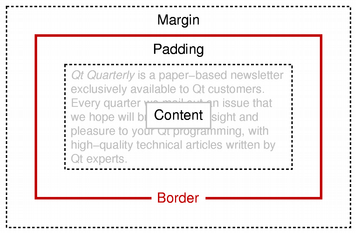

| Home · All Classes · Modules · QSS HELP · QSS 案例 · VER007 HOME |
该QTextFrameFormat类提供的格式信息帧QTextDocument。More...
继承QTextFormat。
通过继承QTextTableFormat。
该QTextFrameFormat类提供的格式信息帧QTextDocument。
一个文本框组合在一起的一个或多个文本块，提供了一个层结构比段落更大。一帧的格式指定它如何呈现和定位在所述屏幕上。它不直接在指定的文本格式的行为，但提供了有关其子女的布局约束。
帧格式定义width（）和height屏幕上的帧的（） 。每帧可以有一个border（） ，围绕它的内容用矩形框。边框是由包围margin（）周围的框架，并在框架的内容被分开的边界由所述框架的padding（ ） 。此方案类似于使用层叠样式表对HTML页面的盒模型。

该position一帧（ ）设置使用setPosition（ ），并确定它是如何定位相对于周围的文本。
一个QTextFrameFormat对象的有效性可以用来确定isValid（）函数。
这个枚举变量描述文本框不同的边框样式。
| Constant | Value |
|---|---|
| QTextFrameFormat.BorderStyle_None | 0 |
| QTextFrameFormat.BorderStyle_Dotted | 1 |
| QTextFrameFormat.BorderStyle_Dashed | 2 |
| QTextFrameFormat.BorderStyle_Solid | 3 |
| QTextFrameFormat.BorderStyle_Double | 4 |
| QTextFrameFormat.BorderStyle_DotDash | 5 |
| QTextFrameFormat.BorderStyle_DotDotDash | 6 |
| QTextFrameFormat.BorderStyle_Groove | 7 |
| QTextFrameFormat.BorderStyle_Ridge | 8 |
| QTextFrameFormat.BorderStyle_Inset | 9 |
| QTextFrameFormat.BorderStyle_Outset | 10 |
这个枚举被引入或修改的Qt 4.3 。
See also borderStyle（）和FrameBorderStyle。
这个枚举说明如何一帧位于相对于周围的文本。
| Constant | Value |
|---|---|
| QTextFrameFormat.InFlow | 0 |
| QTextFrameFormat.FloatLeft | 1 |
| QTextFrameFormat.FloatRight | 2 |
构造一个文本框格式对象的默认属性。
返回像素的边框的宽度。
See also setBorder（ ） 。
返回用于框架的边框刷。
此功能被引入Qt的4.3 。
See also setBorderBrush（ ） 。
返回框架的边框的样式。
此功能被引入Qt的4.3 。
See also setBorderStyle（ ） 。
返回的帧的下边距以像素为单位的宽度。
此功能被引入Qt的4.3 。
See also setBottomMargin（ ） 。
返回框架的边框矩形的高度。
See also setHeight（ ） 。
返回True如果格式说明是有效的，否则返回False 。
返回的帧的左边距以像素为单位的宽度。
此功能被引入Qt的4.3 。
See also setLeftMargin（ ） 。
返回的帧的外部边距以像素为单位的宽度。
See also setMargin（ ） 。
返回以像素为框架的内部填充的宽度。
See also setPadding（ ） 。
返回帧/表中的当前设置的分页符政策。默认值是QTextFormat.PageBreak_Auto。
这个函数中引入了Qt 4.2中。
See also setPageBreakPolicy（ ） 。
返回的定位策略框架与此帧格式。
See also setPosition（ ） 。
返回的帧的右边距，以像素为单位的宽度。
此功能被引入Qt的4.3 。
See also setRightMargin（ ） 。
设置width（以像素为单位）帧的边界。
See also border（ ） 。
设置brush用于框架的边框。
此功能被引入Qt的4.3 。
See also borderBrush（ ） 。
设置style的帧的边界。
此功能被引入Qt的4.3 。
See also borderStyle（ ） 。
设置框架的底部margin以像素为单位。
此功能被引入Qt的4.3 。
See also bottomMargin（ ） 。
设置帧的height。
See also height（ ） 。
这是一个重载函数。
设置帧的height。
设置框架的左margin以像素为单位。
此功能被引入Qt的4.3 。
See also leftMargin（ ） 。
设置帧的margin以像素为单位。这种方法同样设置了左，右，上和框架为相同的值的上下边界。个别利润率复盖一般利润率。
See also margin（ ） 。
设置width以像素为框架的内部填充。
See also padding（ ） 。
设置为帧/表分页政策policy。
这个函数中引入了Qt 4.2中。
See also pageBreakPolicy（ ） 。
设置policy用于定位的帧与该帧的格式。
See also position（ ） 。
设置帧的权利margin以像素为单位。
此功能被引入Qt的4.3 。
See also rightMargin（ ） 。
设置帧的顶部margin以像素为单位。
此功能被引入Qt的4.3 。
See also topMargin（ ） 。
设置帧的边界矩形的width。
See also width（）和QTextLength。
这是一个重载函数。
该设置框的边框矩形的宽度的宽度到指定的简便方法固定width。
返回的帧的上边距，以像素为单位的宽度。
此功能被引入Qt的4.3 。
See also setTopMargin（ ） 。
返回框架的边框矩形的宽度。
See also setWidth（）和QTextLength。
| PyQt 4.10.3 for X11 | Copyright © Riverbank Computing Ltd and Nokia 2012 | Qt 4.8.5 |